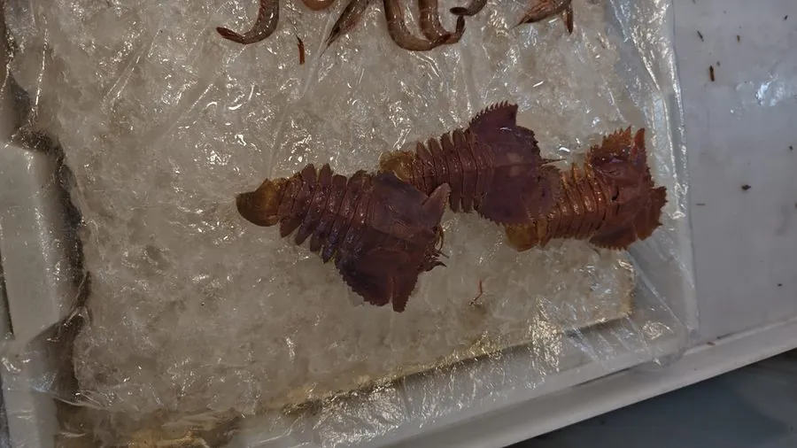

甲壳动物 · 动物界
九齿扇虾 Ibacus novemdentatus

身体扁平如拖鞋的龙虾近亲，头胸甲边缘有九枚齿，生活在浅海泥沙底，中国沿海常见，可食用但产量不大。
- 分类
- 门节肢动物门纲软甲纲目十足目科蝉虾科属扇虾属
- 栖息环境
- 潮间带至浅海沙泥底，白天埋沙、夜间活动
- 地理分布
- 中国沿海、日本和东南亚浅海
- 保护级别
- 暂无评估
物种志
九齿扇虾体长约 10–15 cm，身体扁平，头胸甲宽大如扇，前缘两侧共有九枚明显的齿，因此得名；第二触角宽扁呈叶状，步足短小，尾部宽大，外形像一只拖鞋。
它生活在潮间带至浅海的沙泥底，白天埋在沙中，夜间出来活动，取食贝类、蠕虫和小型甲壳动物。九齿扇虾属于蝉虾类，与龙虾是近亲，但没有龙虾那样的大螯。它分布于中国沿海、日本和东南亚，是沿海常见的底栖甲壳动物，主要作为副渔获物被捕捞，肉质可食，但产量不大。它对底质环境比较敏感，拖网捕捞和滩涂开发可能影响其种群，目前尚无专门的保护评估。它的第二触角宽扁如叶，是蝉虾类常见的形态特征。
形态与习性
- 食性取食贝类、蠕虫和小型甲壳动物
- 体长约 10–15 cm
- 识别身体扁平如拖鞋，头胸甲边缘有九枚齿
- 习性白天埋在沙中，夜间出来活动
- 分类蝉虾科，与龙虾是近亲但没有大螯
- 经济可食用，多为副渔获物，产量不大
趣味知识
- 九齿扇虾的身体扁得像一只拖鞋，因此也叫拖鞋龙虾。
- 头胸甲边缘的九枚齿，是它得名的原因。
- 它白天藏在沙里，晚上才出来找东西吃。